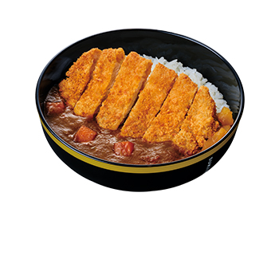
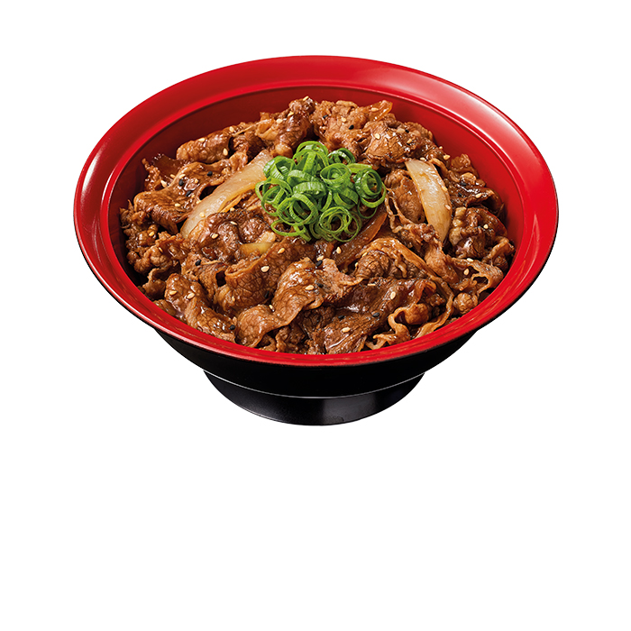
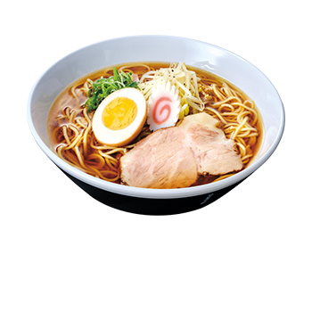
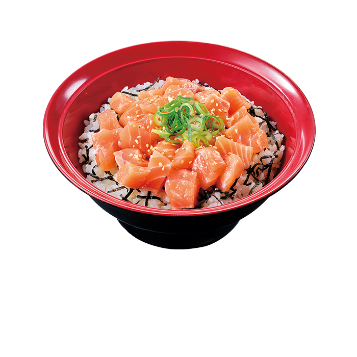
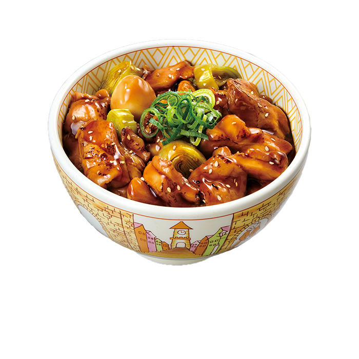
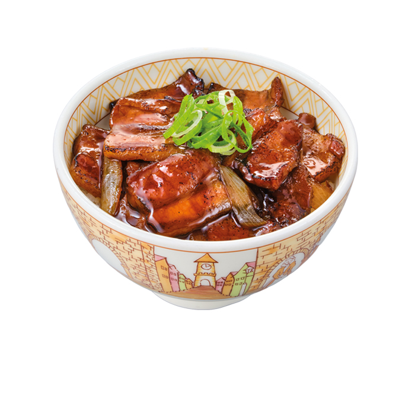
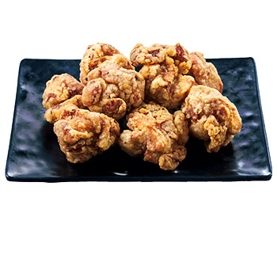

01 / 08CARDÁPIO SUKIYA牛丼

ESCOLHA SEU MOMENTO
Gyudon
A tigela que dá início ao seu momento Sukiya.
Role para a próxima categoria ↓02 / 08CARDÁPIO SUKIYAカレー

ESCOLHA SEU MOMENTO
Curry japonês
Uma outra maneira de encontrar seu próximo favorito.
Role para a próxima categoria ↓03 / 08CARDÁPIO SUKIYA焼肉

ESCOLHA SEU MOMENTO
Yakiniku
Explore as opções e escolha o seu próximo prato.
Role para a próxima categoria ↓04 / 08CARDÁPIO SUKIYAラーメン

ESCOLHA SEU MOMENTO
Lámen
Seu momento de fazer uma pausa e aproveitar.
Role para a próxima categoria ↓05 / 08CARDÁPIO SUKIYAサーモン

ESCOLHA SEU MOMENTO
Salmão Don
Mais uma descoberta para a sua próxima visita.
Role para a próxima categoria ↓06 / 08CARDÁPIO SUKIYA焼き鳥

ESCOLHA SEU MOMENTO
Yakitori Don
Escolha a combinação que mais combina com você.
Role para a próxima categoria ↓07 / 08CARDÁPIO SUKIYA豚丼

ESCOLHA SEU MOMENTO
Ton-Don
Mais sabor para variar o seu momento Sukiya.
Role para a próxima categoria ↓08 / 08CARDÁPIO SUKIYAもう一品

ESCOLHA SEU MOMENTO
Acompanhamentos
O toque a mais para completar o seu pedido.
Role para a próxima categoria ↓JÁ ESCOLHEU?